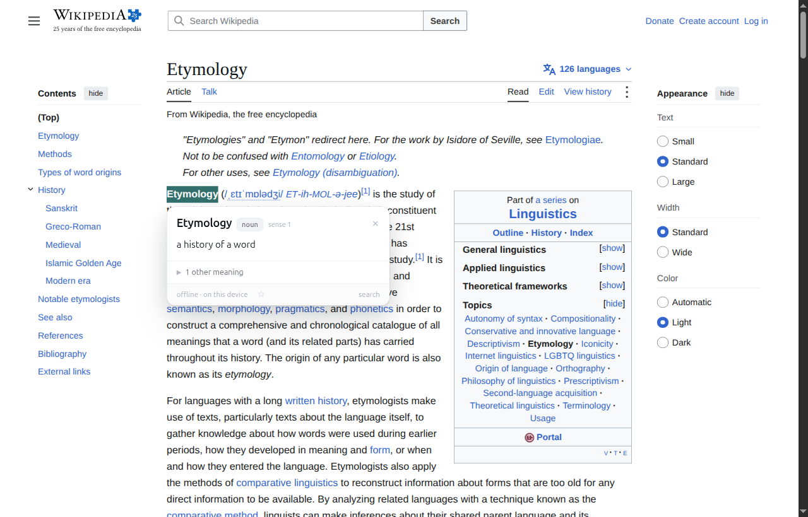
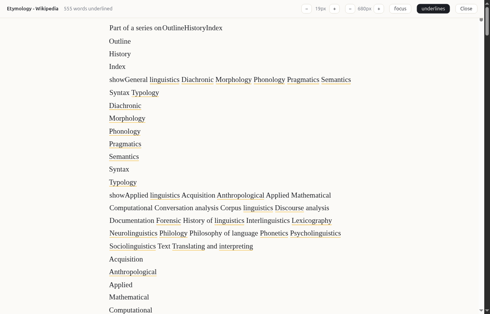
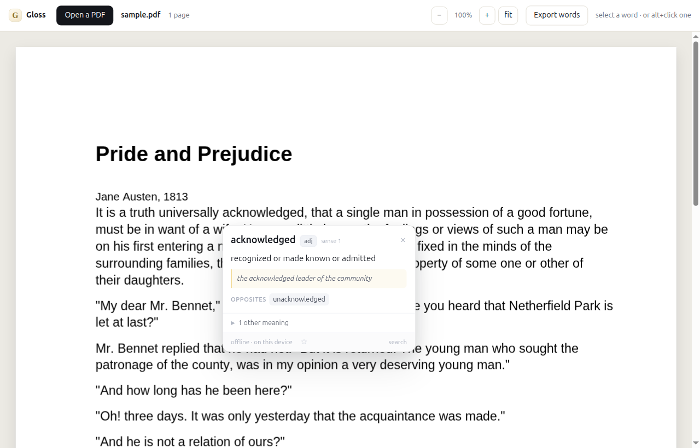
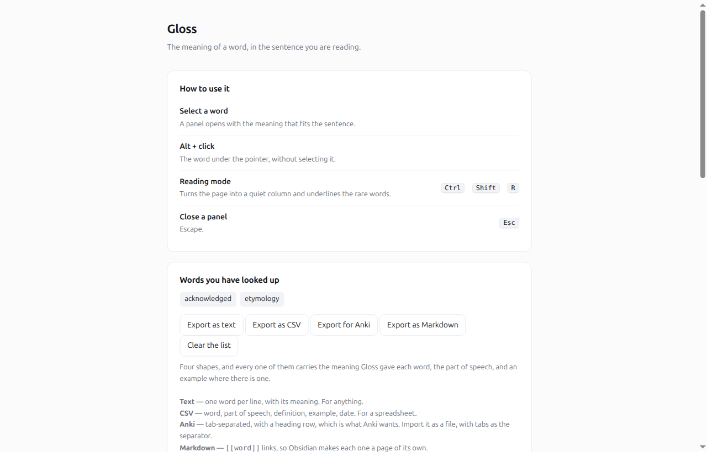

Select a word on any page and Gloss tells you what the writer meant by it — in that sentence, not the nine meanings a dictionary lists and leaves you to guess between. Nothing is uploaded, and it works with the network off.
$10, once. No account, no subscription, nothing uploaded, and it works with the network off.
Select any word in the text below. The first meaning you see is the one that fits the sentence it is in — and the others are there underneath, in order, with examples.
The council failed to reach a quorum on Tuesday, and the report was published without comment. She was sanguine about the prospects, and her argument for the new scheme was cogent.
The sanguine character of the debate was noted by the chair. He took a bribe to speed up the permit, and the tenable position was hard to find. The perfunctory nod changed nothing, and the facility of the explanation was the point of it: a lugubrious account of the indefensible decision, the ostensible reasoning, a profligate spending of the committee's time.
Try “sanguine”. It appears twice, and it means two different things — the optimistic one in the first sentence, the reddish one in the second. A dictionary popup gives you both at once, in no order. Gloss picks the one the sentence means.
These are photographs, not drawings: the extension, on a real page, in a real browser, doing exactly what it does for you.




Every dictionary already has the evidence — a million words with meanings, and example sentences for nearly all of them. Nobody was using it this way.
WordNet gives example sentences for every meaning it holds. Gloss scores each meaning by how much your sentence resembles the examples for it.
A word in half of the examples tells you nothing. A word in two of them tells you a great deal. So each word is weighted by how rare it is.
It is the difference between shot the film and the shot put. Gloss works out which one you are using from the words around it.
WordNet for the meanings, its 2020 refresh, and Wiktionary for the words of the last thirty years. And a table of usage notes — the kind a dictionary prints beside a word with several lives — for the ones that need telling apart.
When the sentence says little, the commonest meaning is what you meant — and when it says a lot, the sentence wins.
Turn the page into a quiet column of text and underline the words you are likely to not know. Click one and it is answered.
WordNet is from 1993. Some words it has never heard of. Gloss says so rather than guessing, and offers you a search instead.
Measured, not claimed.
On seventy-three sentences written afterwards — with the meaning a careful reader would say the writer meant marked for each one, and with the engine finished before they were written — the right meaning came first seventy-three times.
And on coverage: of the eight thousand eight hundred and sixty-nine commonest English words that are not just grammar, Gloss answers ninety-seven in every hundred. The rest are function words — these, into, against — which nobody selects to look up.
That is the dictionary doing the work: WordNet for the meanings, and a table of usage notes — the kind a dictionary prints beside a word with several lives — for the ones that need telling apart. The sentences are published, so you can check them.
On deliberately ambiguous words — bank, charge, cast — it is right about half the time, which is why the panel shows the other meanings with their examples rather than pretending to be certain.
The sentences it is measured on are published here, each with the meaning a careful reader would say the writer meant. So are the usage notes: here. The check that reads them is in the source repository.
The extension, with every dictionary it needs inside it: WordNet, its 2020 refresh, and Wiktionary. A million words with meanings, on your own machine, and no subscription, no account, and nothing uploaded.
Payhip takes the payment and gives you the file at once. Rather pay another way? Write to me and I will send it and invoice you.
That is the whole product: one download, and it is yours. Checkout is on Payhip, and the download is immediate. If it does not do what you expected, write to me and I will refund it — no form, no questions.
No. The dictionary is part of the extension — it is read from the extension's own files, never downloaded. Gloss makes no network requests at all, which is why it works with the network off.
Those give you the general meaning and leave you to work out which one the writer meant. Gloss ranks the meanings by the sentence, so the one you want is at the top. A longer comparison.
You can — if you have an account, an API key and a mind to paste the sentence into a chat box. Gloss is offline, free of that, and answers in a panel instead of a paragraph.
The list of words you have looked up, in your browser's own storage. It is used to tell you "looked up before", and to stop underlining words you already know. It is never sent anywhere, and you can clear it in the settings.
Almost none now. Gloss carries three dictionaries: WordNet 3.1, its 2020 refresh, and Wiktionary — a million words with meanings between them, which is why emoji and hashtag answer as well as sanguine does. And a word that no dictionary has, but that is a word, is said so plainly rather than invented.
Payhip takes the payment and gives you the zip straight away, and emails the link
as well, so the file is yours even if you close the page. Unzip it, open
chrome://extensions, turn on Developer mode, and press
Load unpacked. Nothing else is needed — no account, no sign-in.
Yes — write to me and we will sort out a way that works for you, and I will invoice you directly.
It is a browser extension, so it works in any browser that runs them. A phone app and a Kindle app are a different piece of work, and a different product.